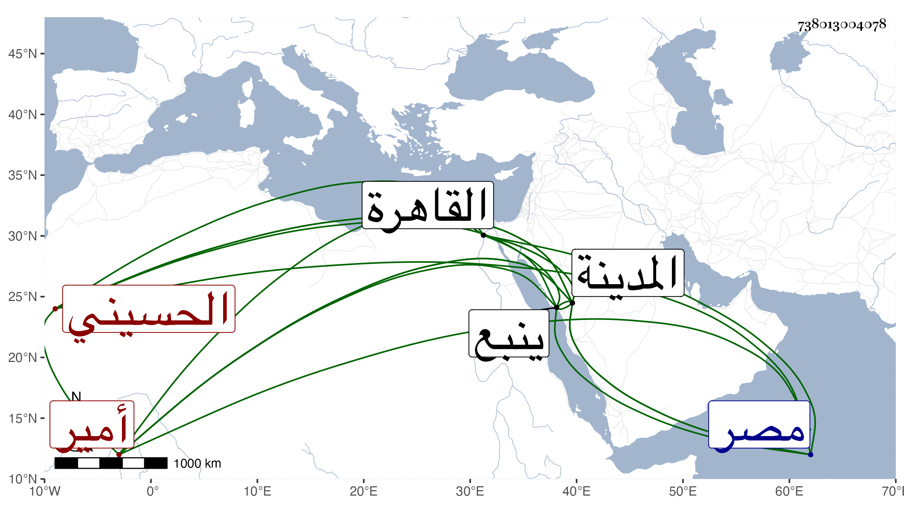

0902Sakhawi.DawLamic.ITO20230111-ara1.EIS1600.738013004078
Biography ID: 738013004078
530
غرير بن هيازع بن ثقبة بن جماز الحسيني أمير المدينة وينبع . أقام في إمرة المدينة ثمان سنين ووقع بينه وبين ابن عمه عجلان بن نعير أخي ثابت اختلاف كما كان بين أسلافهما فهجم غرير على حاصل المسجد فأخذ منه مالا جزيلا فأمر السلطان أمير الركب بالقبض عليه ففعل وذلك في ذي الحجة سنة أربع وعشرين وأحضره صحبة الركب إلى مصر فاعتقل بقلعتها فمات في صفر التي تليها بعد ثمانية عشر يوما ، وكان خاله مقبل بن نخبار أمير الينبوع قد جهز مع قصاده قدر المال المنسوب إليه أخذه فلما بلغهم موته رجع بعضهم إلى مرسله بما معه من المال واختفى بعضهم بالقاهرة . ذكره شيخنا في إنبائه .
